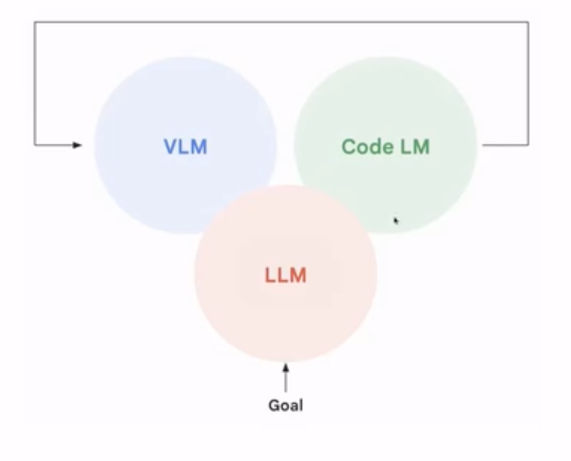

机器人基座模型与VLA概述¶
AI与机器人发展¶
近十多年深度学习首先在计算机视觉中取得突破，应用于机器人的感知模块。无人车成为最早应用深度学习的机器人场景之一。
AlphaGo 的出现代表深度强化学习的进步，展示了神经网络在复杂连续状态空间中进行决策的能力。 但是强化学习在游戏和下棋等任务中表现优异，但在机器人领域的通用性仍然有限。
ChatGPT的出现,虽然不是机器人专用模型，但其强大的通用性展示了 AI 可以具备跨任务、跨模态的泛化能力。 为构建通用机器人模型带来了希望。
这一次机器人革命的不同¶
大语言模型的通用性和强大推理能力为机器人提供了新的“大脑”基础。自2023年下半年起，大语言模型开始辐射到机器人领域，成为推动新一轮热潮的关键力量。
传统机器人高度专业化，需要针对不同任务需要开发不同的机器人硬件和软件，无法规模化。 并且出货量低，即使是最成功的工业机器人公司，其产品规模也无法与手机、汽车等消费级产品相比。
人形机器人有通用本体，具有适应多种任务的潜力，是实现通用机器人的关键方向。然后形态统一，避免了针对每个任务重新设计机器形态的需求。
如今技术路线逐渐收敛，越来越多的研究者和创业者倾向于采用统一的架构，如 VLA模型。 但仍在探索最佳的技术路径和应用场景。
- VLA 是 Vision（视觉）、Language（语言）、Action（动作） 的统一体，代表一种融合多模态输入输出的通用机器人模型。
- Vision：处理图像、视频等视觉信息。
- Language：理解并生成自然语言指令或描述。
- Action：输出具体的物理动作，驱动机器人执行任务。
-
端到端模型：
- 强调统一架构，无需中间模块分割，直接从输入到输出进行梯度回传。
- 可以 scale（扩展）和泛化（适应多种任务）。
-
模态扩展性：
- 虽然命名只有 VLA（Vision-Language-Action），但实际希望整合更多模态（如触觉、声音等）。
- 目标是构建一个统一的“通感”模型，像人一样具备综合感知与行动能力。
- LAM（Language-Action Model）：
- 最初阶段为纯语言模型，仅处理文本信息。
- VLM（Vision-Language Model）：
- 加入视觉模态，形成视觉+语言的联合理解能力。
-
VLA（Vision-Language-Action Model）：
- 在 VOM 基础上加入 Action 模态，使模型具备执行物理动作的能力。
- 成为当前研究的核心方向，被认为是实现通用机器人的关键一步。
-
最核心问题：可扩展的模型架构（Scalable Architecture）
- 现有模型尚未找到真正能 scale 到复杂任务的架构。
- 需要设计出能够持续提升性能、适应不同场景和任务的统一模型。
构建 VLA 模型本身既是一个科学问题，涉及认知、学习机制的理解。而在实现该模型的过程则是工程问题，包括数据收集、训练策略、硬件适配等。
人就是一个标准的通用 VOA 模型
- 具备视觉、语言、动作的集成能力，能灵活应对各种环境和任务。
- 因此，VOA 的最终形态应类似 AGI（通用人工智能），即具备类人智能的机器人系统。
基座模型（Foundation Model）的兴起¶
- 核心理念：使用大规模多模态数据预训练统一大模型
- 优势：
- 通过 fine-tuning 或 prompt 直接应用于多种任务
- 实现了"大脑"的统一
- 显著提升泛化能力和效率
目前主流做法仍属"专用模型"
- 典型代表：阿罗哈（Aloha）、URT、U20 等机器人
- 特点：
- 每个本体 + 每个任务使用独立模型
- 类似早期 AI 的"小模型+专用开发"模式
- 虽比传统编程更先进，但仍不具备通用性
构建统一的"机器人大脑"¶
- 目标：将 Vision（视觉）、Language（语言）、Action（动作）三大模态统一建模
- 特性：
- 端到端训练，直接输入指令 → 输出动作
- 支持 zero-shot 泛化，适应新任务、新本体
- 可扩展至其他模态（触觉、声音等），形成"通感"模型
VLA 的技术演进路径¶
第一阶段：借用已有模型
- 方法：利用现有 VLM（视觉语言模型）或 LLM（语言模型）作为组件
- 示例：用 ChatGPT 规划任务步骤，结合传统控制方法执行
- 评价：方法简单但效果有限，无法实现真正端到端控制
第二阶段：端到端预训练
- 核心：构建专门面向机器人的 VLA 模型
- 数据：使用大量机器人操作数据进行预训练
- 能力：支持跨任务、跨本体的泛化能力
- 代表：RT-1、RT-2、Open-VLA、GR-1 等
第三阶段：引入世界模型与强化学习
- 世界模型：
- 加入对未来状态的预测能力
- 提升理解环境变化的能力
- 帮助做出更合理的动作决策
- 强化学习：
- 基于 RL 的 fine-tuning
- 提高复杂任务下的性能上限
规划层的语言模型替代¶
- 功能：用 LLM 替代传统任务规划模块
- 过程：自然语言描述任务 → 拆解成具体步骤
- 示例：让机器人做咖啡，LLM 自动拆分为抓杯子、倒水、加粉等步骤
感知层的 VLM 替代¶
- 功能：用 VLM 替代传统视觉识别模块
- 优势：
- 可处理各种物体、场景，无需特定模型
- 支持零样本识别（zero-shot）
- 提供动态反馈能力
执行层的动作生成¶
- 技术方案：Diffusion Policy、ACT（Action Chunking Transformer）等
- 能力：
- 支持长序列动作、精细操作
- 在仿真和真实环境中均有良好表现
当前主流方法与代表性工作¶
1. SayCan¶
- 使用 LLM 规划任务步骤，结合传统感知与控制模块执行。
- 优势：可以处理复杂逻辑推理任务。
- 缺点：不是端到端训练，无法实时反馈修正。
2. Inner Monologue（内心独白）¶
- 引入环境反馈机制：
- 执行动作后观察结果，根据反馈进行推理和修正。
- 类似人类的“思考—行动—反馈—再思考”过程。
- 模拟人类认知闭环，提升任务成功率。
3. DoReMi(仿真+人形机器人)¶
DoReMi: Grounding Language Model by Detecting and Recovering from Plan-Execution Misalignment
- 在 Inner Monologue 基础上进一步改进：
- 加入更及时的反馈机制（约 10Hz）。
- 使用 VOM 作为 detector，实时监测任务执行状态。
- 发现异常时立即重新规划，避免浪费时间。
- 示例：箱子掉落 → 立即检测并重新拾取，而非等到终点才发现失败。
| 方法 | 核心思想 | 是否端到端 | 是否支持反馈修正 | 是否支持泛化 |
|---|---|---|---|---|
| SayCan | LLM 规划 + 控制模块执行 | 否 | 有限 | 一般 |
| Inner Monologue | 动作 + 反馈 + 推理 | 否 | 是 | 较好 |
| DoReMi | 实时反馈 + VOM + LLM | 是 | 强 | 强 |
实时反馈机制
使用 VLM 实时观测任务执行状态。及时发现错误并进行重规划，提高执行效率。
LLM + VLM 协同工作
- LLM 负责高层推理与规划。
- VLM 负责环境感知与状态判断。
- 两者协同，模拟人类“思考 + 观察”的决策过程。
强化学习增强
- 在模仿学习基础上引入 RL（如 PPO）进行 fine-tuning。
- 提升模型在复杂任务中的性能上限。
- 需要特殊处理以避免训练不稳定问题。
VoxPoser: Composable 3D Value Maps for Robotic Manipulation with Language Models
李飞飞团队提出的 “VoxPoser”，利用 VLM 获取空间信息，LLM 进行任务推理，共同生成可执行的控制程序

自动化 Action 的尝试与代表性工作¶
传统方法的局限性
- 早期机器人动作策略依赖人工编程或预定义规则。
- 即便使用了部分学习方法，也往往需要人为设计特征或选择模型。
借助 LLM/VLM 实现自动编码
- 利用 LLM 的程序生成能力，将自然语言指令直接转化为可执行的机器人控制代码。
- VoxPoser：通过 VLM 感知空间结构，LLM 推理任务逻辑，生成包含 affordance map 和 constraint map 的程序代码，用于机械臂避障与操作 。
- Code as Policy：将 LLM 生成的代码作为机器人策略，实现端到端控制。
- 微软 ChatGPT 控制机器人实验（2023年）：利用 GPT-3.5 或 GPT-4 生成机器人控制脚本 。
优势与挑战 - 优势：显著降低了对人工编程的依赖，提升了任务灵活性。 - 挑战： - 生成代码的稳定性与安全性问题。 - 对真实世界物理规律建模不足，可能导致行为不合理。 - 无法完全替代机器人自身的具身认知能力。
迈向真正通用机器人模型的两条路径¶
-
第一类路径：基于现有 Foundation Model 的扩展应用
- 直接调用 LLM/VLM，配合已有工具链（如运动规划、感知模块）完成任务。
- 属于“拼接式”方案，不重构模型架构。
- 优点：开发成本低，见效快。
- 缺点：泛化能力有限，缺乏真正的机器人“具身智能”。
- 目前的工作大多聚焦于此
-
第二类路径：重新训练/微调专为机器人设计的大模型
- 构建专门面向机器人的基础模型（Robot-centric Foundation Model）。
- 模型架构需考虑多模态输入（视觉、语言、动作）、时序建模、物理约束等。
- 需要大量机器人交互数据进行预训练。
- 优点：具备更强的泛化能力与适应性。
- 缺点：技术门槛高，数据获取困难，训练成本大 。
难点：
-
模型架构设计
- 如何融合语言、视觉、动作等多种模态？
- 如何建模时间序列与物理交互？
- 是否采用 Transformer 架构？还是引入新的神经网络结构？
-
数据收集与标注
- 机器人交互数据难以大规模采集。
- 需要构建统一的数据格式标准（如：观测 + 动作 + 奖励 + 语言指令）。
-
算法与训练方法
- 如何在有限数据下实现有效训练？
- 如何结合强化学习、模仿学习、离线学习等方法？
- 如何解决模拟到现实（Sim2Real）的迁移问题？
-
系统集成与工程落地
- 如何将大模型嵌入机器人系统？
- 如何保证实时性与安全性？
- 如何实现人机协同与安全控制？